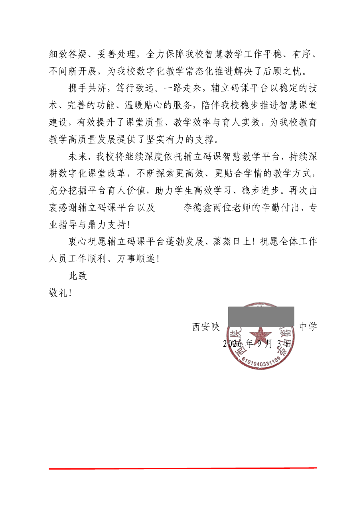
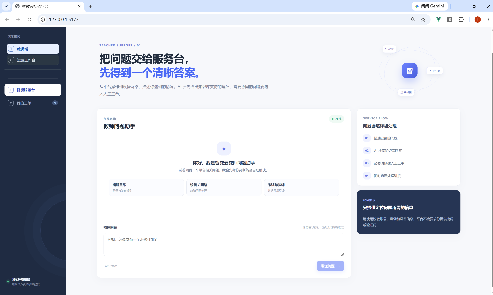

客户沟通
面向校方管理者与一线教师沟通需求、跟进问题、同步处理进度。
证据 · 4 所学校、100+ 名教师回访09 · Recognition
感谢信是工作认可的旁证；具体职责仍以工作记录和前述案例为准。


12 · AI Application Practice
面向教师问题咨询与跟进场景，设计“知识库回答 + 人工工单 + 进度可见”的服务流程。
这项能力证明我能把业务问题转成可验证的 AI 应用方案，不代表真实生产上线或成熟后端开发。
查看 SaaS AI 项目深度案例 →从一线回访里归纳问题，再决定哪些交给 AI、哪些必须转人工。

